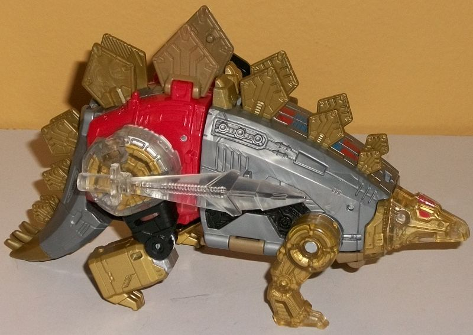
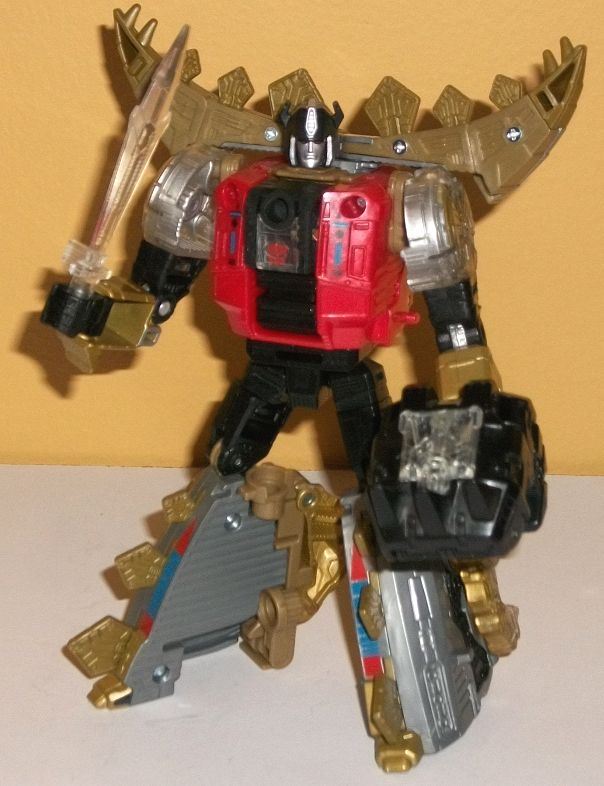
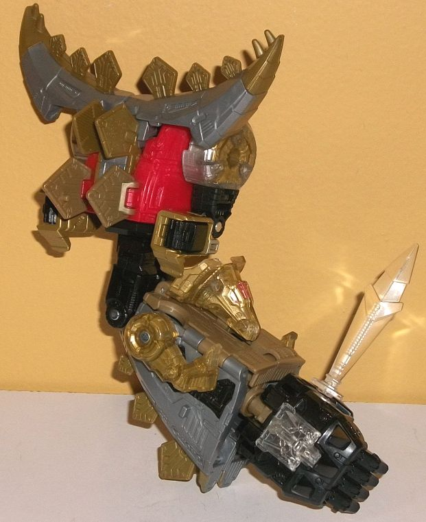
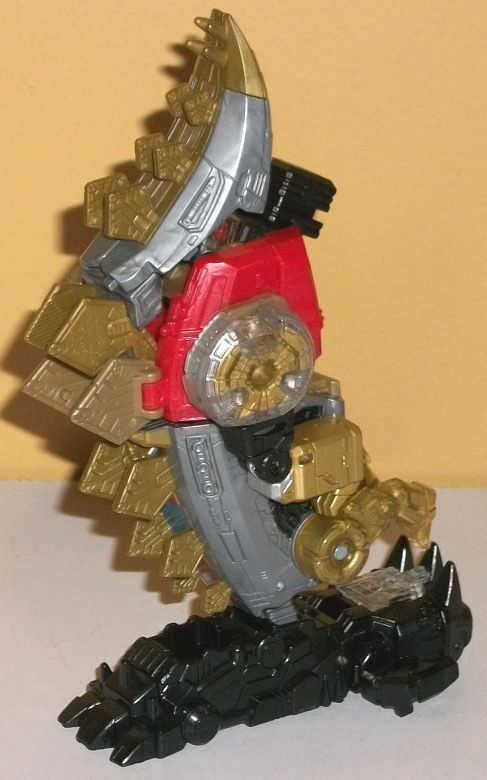

Allegiance
: Autobot
Size
: Deluxe
Difficulty of Transformation to Robot:
Easy
Difficulty of Transformation to Leg
:
Very Easy
Difficulty of Transformation to Arm
:
Very Easy
Color Scheme
: Milky gray, red, dull
milky gold, and some black, metallic gold, silver, blue, and clear plastic
Rating:
8.9


In stegosaurus mode,
like the other combining PotP Dinobots, Snarl very much takes after his
G1 self. He's a little on the stumpy side, though his face is a bit more
realistically proportioned this time and less of a curved wedge. His tail--
which usually sticks fairly straight out-- is also kinda slumped down to
the ground, which works to get those tail segments out of the way easier
in other modes, and to get his combiner port out of there easier. From
a side profile, the tail still looks fairly natural, if missing a bit of
mass near the top of it. As you'd expect, Snarl largely has the same color
scheme as the rest of the PotP Dinobots, with a lot of milky medium gray
and a red segment near the rear. Snarl has more gold than the other Dinobots,
with all of his plates in that dull milky gold plastic shade, along with
much of the plastic on his underside. There's also plenty of gold paint
used on the inside of his clear plastic, giving a pretty cool look to his
head, front legs, and the upper part of his rear legs. There's also some
gold paint on the bottom of his rear legs and on his robot feet, which
stick up slightly from the middle of his body. (Given that they're wedged
in between two of his back plates, though, they're minor pieces of kibble
at best.) Additionally, there's some silver paint on the inside of his
upper rear leg pieces and on his lower legs, and some black on the middle
of his rear legs and along part of the sides of his body to break up some
of the gray/silver. Finally, there's some blue and red simple geometric
details down the front section of his back, and some red paint on his eyes.
All in all it's a pretty good color scheme, looking pretty "metal" overall
but with enough red (and a bit of blue) to help break up his various metallic
colors. His mold detailing is fairly impressive as well, with tech details
such as circuitry, vents, pistons, and the like detailed pretty much all
over him, including on his plates, along with the inside of his transparent
parts, with the gold and silver paint there really helping to bring out
all those cool details. Snarl has a clear plastic sword which can plug
into the center portion of either of his hips-- I wish there was better
storage, but it's a decent main weapon. His Prime Armor can ALSO only be
stored on the side of one of his hips, which looks REALLY awkward. I mean,
these Prime Armor pieces usually don't fit in with the alt mode all that
well, but wow-- seriously? Nothing better than a giant hand hanging off
his hip? Meh. He also has four ports for Prime/Titan Masters in this mode--
two on the top of the red portion of his body near the sides, and two more
on the inside of his biggest back plates, which can be flipped down for
precisely this purpose. For articulation in this mode, Snarl can move at
the top of the front legs, as well as the rear hips (at two points) and
at the rear knees. That's about it, but given his transformation, I don't
see how they could get much more out of him at the deluxe pricepoint.
Snarl's transformation
is fairly straightforward-- the rear legs slide up and become his arms,
the tail rotates out for you to pull the head up before it collapses back
together and splits in two, and the front sections rotate around to be
his feet. The end result is pretty good, with minimal obvious kibble. The
front dino legs hang off the sides of his lower legs pretty blatantly,
but they do at least help give some bulk to what are, from a frontal view,
rather skinny legs given that they're halves of the dino body split down
vertically. The dino head halves hang off the back of said lower legs,
but don't add any such useful bulk to anything. Of course, there are the
tail half sections above Snarl's shoulders, but they frame his silhouette
and, in my opinion, enhance it quite a bit and look cool, so I quite like
them there. His main body is nice and bulky/burly, with some blue and black
details on the sides to break up the red a bit more. (In fact, though his
color scheme is the same in this mode, more of the black is visible, breaking
up more of that gray/silver, and so I like his color layout more in this
mode.) His headsculpt is pretty accurate to his original design, but "updated"
a bit with sculpting and proportions you'd expect from a modern toy. He
still has the angular antennae on the side of his head, a silver-painted
forehead vent, and a silver "normal" mouth with red eyes. His arms and
legs look okay from a diagonal view, but they're a bit skinny from a strictly
frontal view. Given all the angles, he also just looks a bit "stiff" in
this mode. Granted, he IS articulated, but he just doesn't look as dynamic
posed as most other "modern" TF toys. Speaking of articulation, he can
move at the neck, shoulders, elbows (at two points), inwards a bit at the
wrists, rotation at the waist, and movement at the hips (at two points)
and knees, so he's fairly well-articulated. As with all PotP deluxes, Snarl
can fit his "Prime Armor" on his chest in this mode, but it still doesn't
really look like anything, and just adds some extra mass to his chest that
isn't really needed. There's a reason I have to keep reminding myself that
Prime Armor can be used as something other than parts in combined mode,
and that's because I basically never use them when they're not in combined
mode because they look so weird.


Snarl's arm mode is
his robot mode, but with the combiner peg facing outwards from the chest
instead of the head; the arms slid down slightly, turned around, and pegged
into the side of the chest; and the legs put back together with a small
port piece flipped out so you can attach the hand down there. As with many
beast combiner limb modes, the beast appendages get in the way a bit--
particularly the robot arms, which are down so low they can interfere with
elbow movement. The dino head and front legs also point out a bit on the
lower arm, though they're not as bad. I do like the stegosaurus plates
on the back side of the lower arm, though, giving it a nice "ridged" look.
Snarl's tail halves framing the top of the shoulder also look nice and
unique. As with most PotP arm modes, in this mode Snarl can move at the
shoulder (at two points), elbow (at two or three points, depending upon
how you orient the lower arm), rotation at the wrist, and movement at both
thumbs and at the base of the fingers (all four fingers as one piece).
Snarl's leg mode
is basically just the dino mode planted face-first, but with the head folded
behind the body and the foot plugged into a port behind said head instead.
Of course the appendanges are scrunched up, with the rear legs/robot arms
actually pegging in, but the front dino legs are just kinda hanging out
there near the bottom. I don't mind the appendages on the sides here as
much as I do on other beastformer combiner appendages (or Snarl's arm mode),
however, because the row of stegosaurus plates going down the entire length
of the leg looks great, and really draws attention away from the appendages.
The leg is also of a pretty uniform width beyond said appendages, and here's
where the relatively flat proportions of the robot arms come in handy,
not sticking out from the sides as much as they otherwise would. The combiner
port on the butt is there, but is mostly hidden by the stegosaurus tail
"kneecap". The kneecap can fold quite a bit forwards however, so this doesn't
hinder articulation. Speaking of articulation, like basically every combiner
leg mode, Snarl can move at the knee (at two points) and has rotation and
slight tilting at the ankle because of how the foot piece plugs in.
Snarl is my favorite of the PotP Dinobots. Despite also forming a leg and arm for a combiner, it doesn't take much from his individual modes, beyond perhaps some minor kibble around his legs in robot mode and a tail that's slightly smaller than it should be. Still, overall he looks great in both dino and robot modes, and his leg mode is pretty solid as well. His arm mode is the only mode that's iffy, and that's primarily because his robot arms get in the way of elbow articulation. Recommended, even if you don't want to combine him into Volcancius.
Review by Beastbot